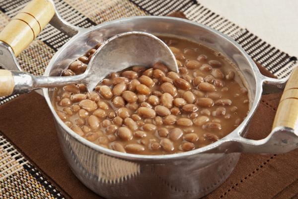

Ingredients
HOME

1 xícara (chá) de feijão-carioquinha cru (170 g)
1 sachê de tempero pronto
1 folha de louro
2 dentes de alho amassados
4 xícaras (chá) de água (800 ml)
1 colher (chá) de sal
1 colher (sopa) de óleo